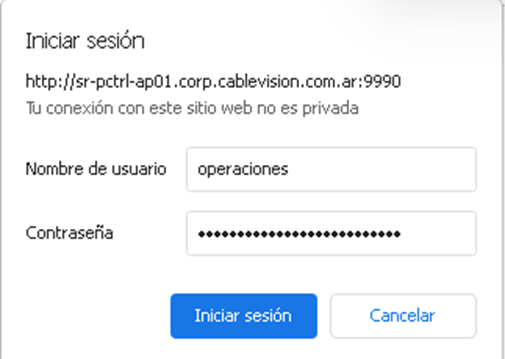
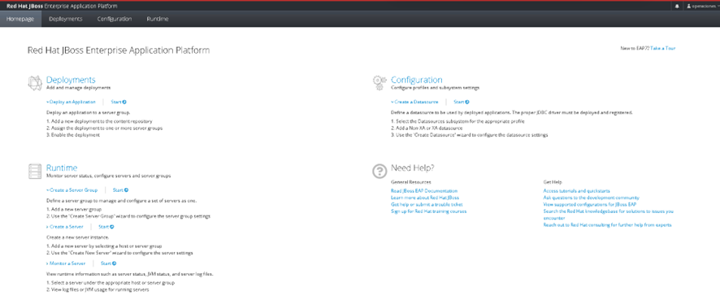
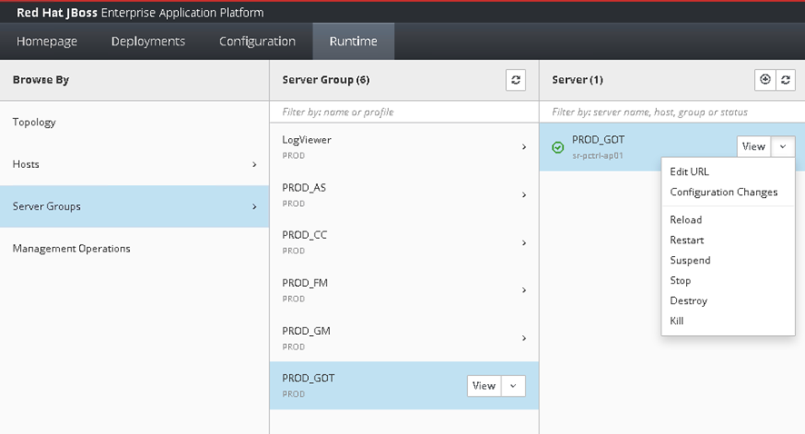
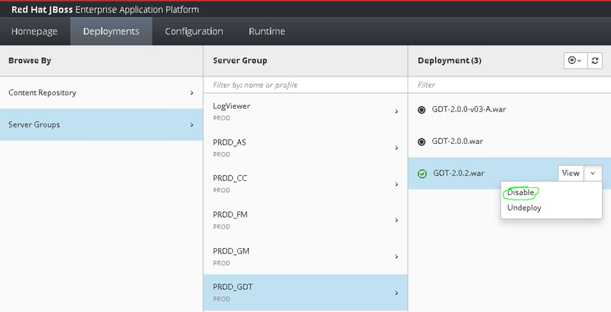
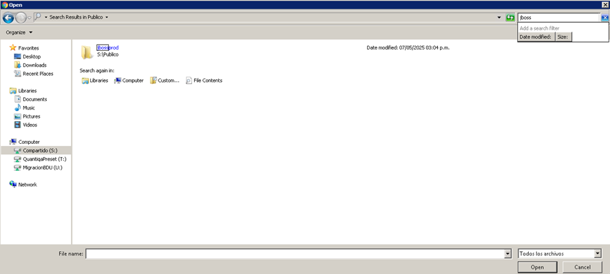
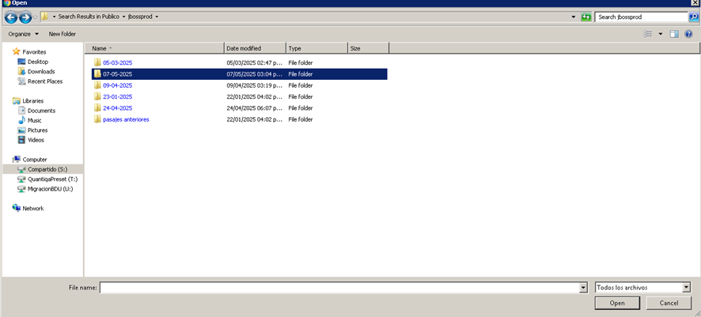
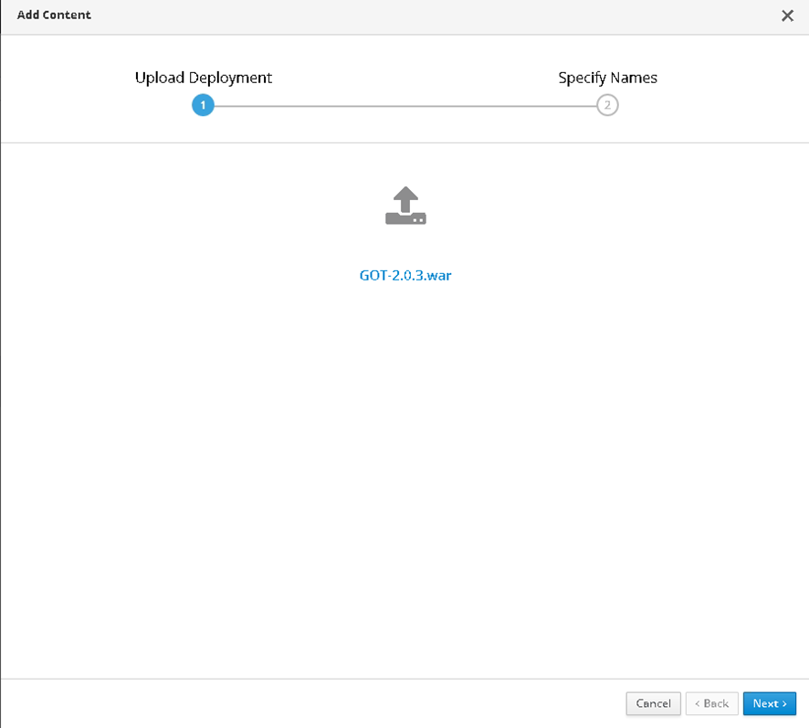

Paso 1 – Acceso a la Consola JBoss
Abrir navegador y acceder a la consola de administración de JBoss.
http://sr-pctrl-ap01.corp.cablevision.com.ar:9990/console/index.html

Paso 2 – Panel principal
Una vez dentro, se mostrará el panel principal.

Paso 3 – Ir a Runtime y Server Groups
Seleccionar la pestaña 'Runtime' y hacer clic en 'Server Groups'.
Paso 4 – Detener grupo de servidor
Seleccionar el grupo de servidor correspondiente y presionar 'Stop'.

Paso 5 – Ir a la pestaña Deployments
Desde el panel superior, navegar a 'Deployments'.
Paso 6 – Deshabilitar WAR actual
Identificar el WAR activo (ícono verde) y hacer clic en 'Disable'.

Paso 7 – Subir nuevo archivo WAR
Hacer clic en 'Upload new deployment'.
Paso 8 – Seleccionar archivo WAR
Navegar hasta la carpeta correspondiente y seleccionar el WAR.

Paso 9 – Confirmar y subir
Confirmar el archivo seleccionado y presionar 'Next'.

Paso 10 – Iniciar servidor
Volver a Runtime y presionar 'Start' en el grupo de servidor.

Paso 11 – Rollback – Restaurar versión anterior
1. Detener el servidor (Runtime > Stop o Kill).
2. Deshabilitar el WAR actual.
3. Habilitar el WAR anterior (Enable).
4. Reiniciar el servidor.
×